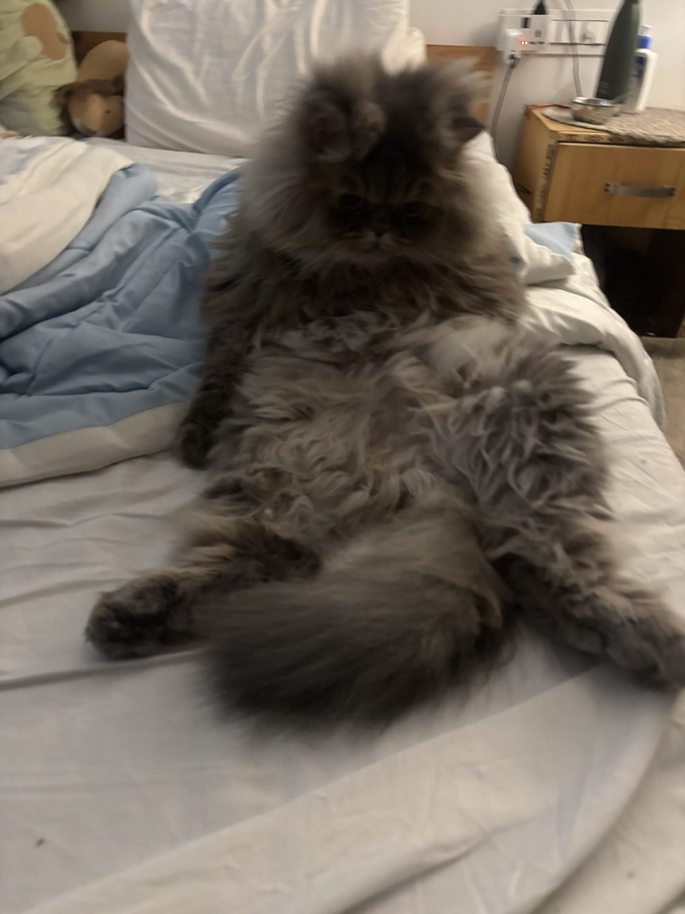
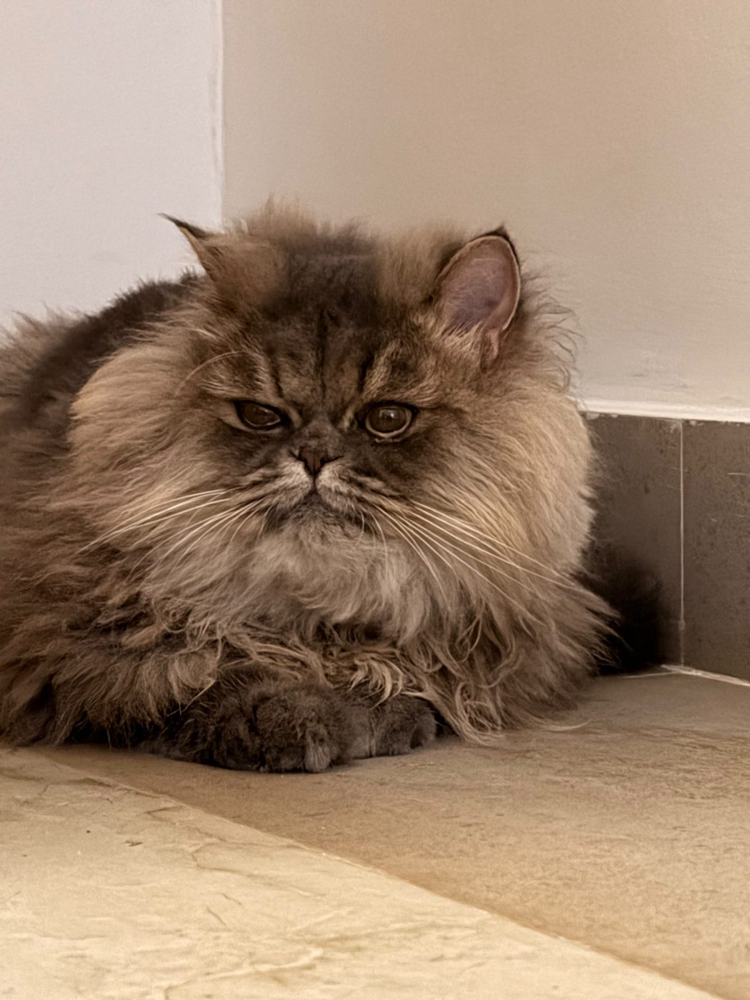
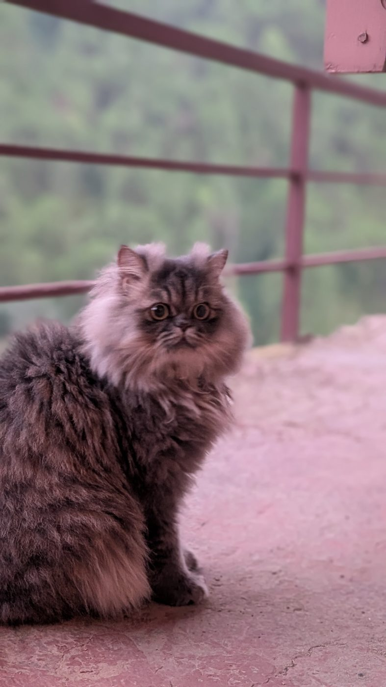

The official website of
Persian. Floof. Professional Napper.
Part-time Bird Inspector. Never once caught a bird.
(he only says one thing, and he means it)

sits like a retired uncle
0.0
hours slept today
(live, still counting)
0
birds caught
(glass is undefeated)
0
dogs confronted
(glared at: 47)
0
critters hunted on this page
(scroll down & help)
Frost has just woken up. Drag the slider to see when it's safe to approach.

DANGER ZONE
Just woke up. Do not speak. Do not breathe loudly. Do not exist.
CLASSIFIED
He could go outside. He has chosen not to. Very strategic.
Birds and dogs get the glass treatment. But bees and butterflies? Fair game. And spiders? Frost shows no mercy. Help him hunt: click the critters before they get away.

Note: bees and butterflies are released immediately. He's a chaser, not a finisher. Spiders, however, are finished.